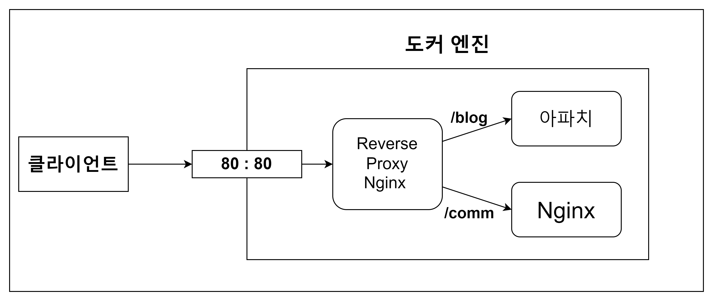

Reverse Proxy를 경로로 구분하기
docker-compose
프록시의 구조

이미지 구조처럼 ReversedProxy 역할을 하는 Nginx에 설정을 변경해야합니다.
Path에 따라 서버 요청을 분기처리하기 때문에 Nginx의 server부분을 수정합니다.
이제 프록시 역할을 하는 nginxproxy-1에 접속하여 server설정을 변경합니다.
이후 에디터를 통해 파일을 수정해야하기 때문에 vim을 설치합니다.
옵션 설정을 보면 요청 location에 따라 분기처리 되도록 설정되어있습니다.
설정파일에서 설정한 docker-apache라는 리퀘스트를 넘겨줄 위치를 지정합니다.
여기서 rewrite를 사용하는 이유는 프록시 서버의 location 의 주소가 upstream되는 웹 서버에도 영향을 끼치기 때문입니다.
예를 들어:
http://3.2.244.244/blog/text.html 을 통해서 요청을 하면 리버스 프록시를 통해서 아파치 서버로 요청을 하는데 아파치 서버가 받은 요청 주소도 http://3.2.244.244/blog/text.html가 됩니다.
현재 아파치 기본 폴더 위치가 /usr/local/apache2/htdocs에서 불필요한 path추가로 /usr/local/apache2/htdocs/blog 안에 파일을 찾기 때문에 분기를 위한 path인 /blog는 제거해야합니다.
rewrite 란
nginx rewrite 설정 참고
Nginx location match tester
rewrite는 URL 패턴을 매칭하여 새로운 URL로 변경하는 역할을 합니다.
이를 사용하여 요청된 URL을 다른 경로로 보내거나, 쿼리 매개변수를 추가하거나, 확장자를 변경할 수 있습니다.
문법
regex: 매칭되는 URL 패턴을 지정합니다.
Nginx에서 채택한 정규표현식 문법은 PCRE 구문으로,Perl이라는 언어에 유래되었습니다.
replacrement : 변경할 url이나 path를 지정할 수 있습니다.
flag: 여러개의 location이 설정되어 있을 때, 변경된 URL이 다른 location으로 매칭될 수 있으므로, 이를 처리할지를 설정
break를 사용하면, 변경된 url이 다른 location 설정에 따르지 않고 현재 location 설정만 따르고 끝남
break가 아닐 경우 다른 location 설정에 일치하면 그 설정도 적용되므로 무한루프에 빠질 수 있음
분기 path 제거하기
이렇게 작성할 경우 요청이 localhost/blog/name/info.html로 들어온다면 location /blog/는 path만 가져오기 때문에 /blog/name/info.html이 들어옵니다.
^/blog의 의미는/blog로 시작하는 path를 의미합니다.(.*)의 의미는.점은 임의의 한 문자를 의미합니다*는 0개 이상을 나타냅니다.?는 한글 자를 의미합니다.+는 한글자 이상을 나타냅니다.
$의 의미는 끝나는 문자열을 의미합니다.
정리하면, /blog로 시작하는 path 와 어떤 문자든 상관없이 다시 작성하겠다는 의미입니다.
$1은 ()사이에 있는 표현식을 나타내며 만약 (\d+)-(\d+)-(\d+)는 $1-$2-$3라고 표현할 수 있습니다.
$1이 \blog(.*)이기 때문에 \blog뒤에 붙은 모든 path는 $1에 포함됩니다.
이렇게 path가 변경되어 전달됩니다.
참고)
php 설정
워드프레스등은 PHP를 사용하며, 이 때는 php 모듈 설치와 함께,nginx에 fastcgi 설정을 해야합니다.
필요할 때 참고
에러페이지 설정
특정 HTTP 에러에 따라 설정한 별도 에러페이지를 보여주기 위해서 다음과 같이 설정합니다.
캐쉬설정
HTTP 응답에 다음과 같이 ico,css 등으로 끝나는 파일은 브라우저 캐시창에서 최대한 보관하는 명령을 넣을 수 있습니다.
이 경우,웹페이지 로딩 속도는 개선되지만,해당 파일이 변경될 가능성이 있다면,업데이트가 안되므로, 불변하는 파일만 설정하는 것이 좋음
location의
~*의미는 이후에 나오는 정규표현식에 대소문자 구별을 하지 말라는 의미입니다.